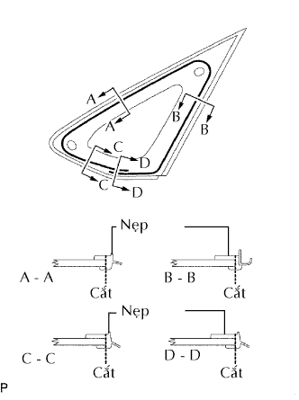

KÍNH CỬA SỔ LẮP CỐ ĐỊNH PHÍA TRƯỚC > THÁO |
| 1. THÁO GIOĂNG CỬA SAU PHẢI |
Tháo một phần của gioăng cửa trước phải sao cho có thể được ốp trang trí trụ xe trước phải. (Xem trang Kích chuột vào đây).
| 2. THÁO TRANG TRÍ DƯỚI TRỤ XE TRƯỚC PHẢI |
| 3. THÁO TRANG TRÍ TRỤ XE TRƯỚC PHẢI |
| 4. THÁO CỤM KÍNH BÊN LẮP CỐ ĐỊNH TRƯỚC TRÁI |
Dán băng dính bảo vệ ra mặt bên ngoài của thân xe để chống xước.
|  |
Dùng một dao, cắt gioăng như được chỉ ra trên hình vẽ.
Tháo nẹp còn lại.
Từ bên trong, hãy luồn dây thép giữa thân xe và kính như được chỉ ra trên hình vẽ.
Hãy buộc các vật thể bằng tay (như các khối gỗ) vao cả hai đầu dây.
Cắt hết keo bằng cách kéo dây thép quanh kính.
Nhả khớp vòng đệm.
Dùng giác hút, tháo kính.
| 5. LAU SẠCH THÂN XE |
Lau và sử lại hình dạng mặt tiếp xúc của thân xe.
Trên mặt tiếp xúc của thân xe, hãy dùng dao cắt phần keo thừa như được chỉ ra trên hình vẽ.
Lau sạch mặt tiếp xúc của thân xe bằng máy làm sạch.